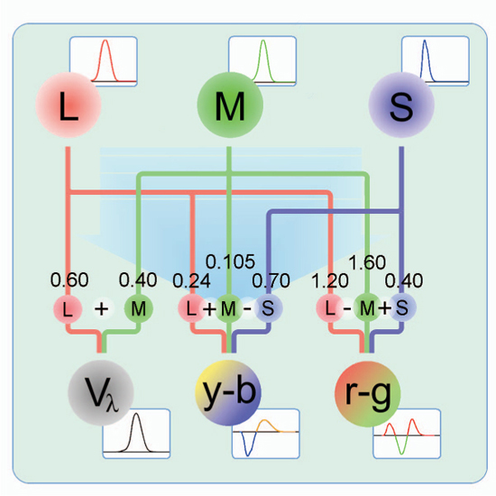

公式サイト
- https://github.com/google/guetzli
- Announcing Guetzli: A New Open Source JPEG Encoder
はじめに
- Guetzli は知覚的(Perceptual)に人間が見ても分からないだろうギリギリまで JPEG 画像を劣化させるチキンレース技術です。
人間が見ても。という評価には Butteraugli を用います。論文では MSE, PNSR, SSIM をよく見かけますが結構雑な評価で、Butteraugli は人間の視覚特性(例えば輝度と色味は別指標、色味も反対色説の色差軸)を元に計算します。

© http://ieeexplore.ieee.org/ieee_pilot/articles/06/ttg2009061291/article.htmlJPEG quality を色々変えて画像サイズと画質のトレードオフを探る事はよくありますが、それの全自動版です。更に DQT (周波数成分毎の量子化パラメータ) を細かくいじります。
良い結果が出るよう何度も繰り返し JPEG 生成処理をする方式なので、とにかく時間がかかります。libjpeg の代わりという訳にはいきません。アクセスが特別多い重要な画像に対してサイズを少しでも減らしたい。zopflipng のような使い方が良さそうです。
制限事項
ソースを読んで気づいた制限事項です。(おかしい。。README に記述されるべきのような。。)
- YCbCr JPEG のみ対応です。CMYK や CYYK は未対応。
- 参考1) https://blog.awm.jp/2016/02/06/ycbcr/ YCbCr について
- YUV444, 420 のみ。422,411,440 は駄目。
- 参考2) https://blog.awm.jp/2016/02/10/yuv/ YUV の種類
うーん。YUV422 の JPEG は世に溢れてるはずだけど、大丈夫なのでしょうか。420 なんかよりずっと多そうだけど。デジカメで普通の画質設定だと 422 になりそうですし。(自分は高画質しか興味ないので、よく分からない)
あと、ICC プロファイルを引き継がないという噂がありますが、自分が試した限りではちゃんと引き継ぎます。ソースコードを見ても APPn を 丸々コピーする処理があります。
どなたか Exif や ICC プロファイルを引き継がない JPEG ファイルをお持ちでしたら頂けないでしょうか。(修正コミットしてコントリビュータに紛れ込みたい！)
インストール
macOS だと brew install guetzli で入りますが、一応 git レポジトリを使う方法のメモです。
libpng(libpng-dev) と gflags (libgflags-dev) のパッケージを入れて make するだけです。macOS Sierra と Linux Ubuntu16 で動作しました。
% git clone git@github.com:google/guetzli.git
% cd guetzli
% make
==== Building guetzli (release) ====
Creating bin/Release
Creating obj/Release
＜略＞
butteraugli.cc
Linking guetzli
ld: warning: option -s is obsolete and being ignored
% ls -l bin/Release/guetzli
-rwxr-xr-x 1 yoya staff 280856 3 17 17:34 bin/Release/guetzli
%
実験
手元にある2Dイラスト画像1406枚で Guetzli を動かして計測しました。 何枚か制限事項に引っかかるようで、実際に処理できたのは 1360枚です。
% ls illust | wc
1406 1406 26445
% mkdir tmp
% cd illust
% (for i in *.jpg ; do o="../tmp/$i" ; identify $i ; time guetzli $i $o ; identify $o ; done >& ../log.txt )
% ls -l ../tmp | wc
1360 12233 86837
- ログデータ(の一部)
3b689cd9.jpg JPEG 500x375 500x375+0+0 8-bit sRGB 59.4KB 0.000u 0:00.000
real 0m7.194s
user 0m6.976s
sys 0m0.212s
../tmp/3b689cd9.jpg JPEG 500x375 500x375+0+0 8-bit sRGB 56KB 0.000u 0:00.000
集計スクリプト
<?php
function filesizeUnit($filesize, $unit) { // to KB
if ($unit === "KB") {
;
} else if ($unit === "MB") {
$filesize *= 1024;
} else if ($unit === "GB") {
$filesize *= 1024 * 1024;
} else {
echo "ERROR: $filesize, $unit\n"; exit(1);
}
return $filesize;
}
foreach (file($argv[1]) as $line) {
if (preg_match("/^([^\/]+.jpg) JPEG (\d+)x(\d+) \S+ \S+ \S+ ([0-9\.]+)(.B)/\
", $line, $matches)) {
list($all, $file, $width, $height, $filesize, $unit) = $matches;
$nPixel = $width * $height;
$size = (int) sqrt($nPixel);
$filesize = filesizeUnit($filesize, $unit);
} else if (preg_match("/^user\s+(\d+)m([\d\.]+)s/", $line, $matches)) {
list($all, $minutes, $seconds) = $matches;
$t = 60 * $minutes + $seconds;
if ($t === 0.01) {
// echo "ERROR: $size $t\n";
} else {
// echo "$size,$t\n";
}
} else if (preg_match("/^\.\.\/tmp\/([^\/]+.jpg) JPEG (\d+)x(\d+) \S+ \S+ \\
S+ ([0-9\.]+)(.B)/", $line, $matches)) {
list($all, $file, $width, $height, $filesize2, $unit) = $matches;
$filesize2 = filesizeUnit($filesize2, $unit);
echo "$filesize,$filesize2\n";
if ($filesize < $filesize2) {
exit(1);
}
}
}
グラフ
処理時間
- 横がsqrt(width*height) 。正方形と仮定した場合の一辺の長さ相当
- 縦が user 時間の秒数
一辺2000px で100秒弱〜200秒が目安になりそうです。
ちなみにそこそこ高性能なゲームPCで実験してます。
ファイルサイズ削減
ちょっと異常な削減率です。半分以下になることさえあります。
削減率の多い画像を目視で確認しても、ぱっと見で違いは分かりませんでした。凄い。。
最後に
イラスト画像は線とグラデーションが命だと考えるとは周波数の中域は荒くて良さそうで、視覚特性以外でも削れる情報があるとかで実な効果が大きいのかもしれません。
Guetzli で処理するとデータの劣化はするので、例えば画像を引き伸ばした時や画像にフィルタをかけた時に、違いが目に見える可能性があります。チキンレースで崖の位置が変われば当然落ちますし。画質評価で設定するその崖の位置は、モニタのDPI、視距離、測色標準観察者の種類といった想定する視聴環境のモデル次第です。